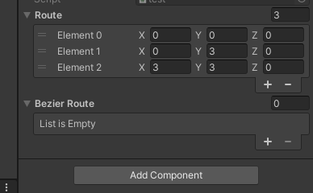
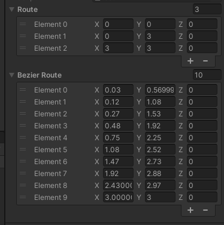
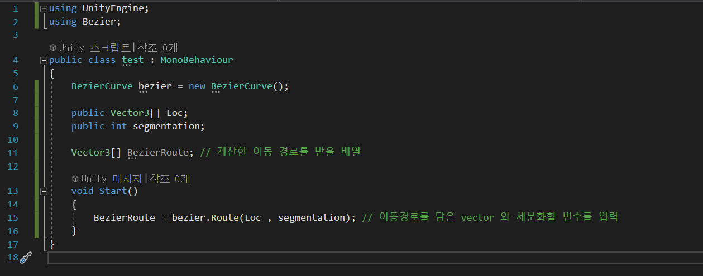

Bezier Curves
Galaga와 같은 슈팅 게임을 하다 보면 적들이 곡선 이동으로 등장하거나, 곡선 이동을 하면 플레이어를 공격합니다.
저는 여기서 적들의 "자연스러운 곡선이동을 구현" 하는 것이 핵심 요소 중 하나라고 생각합니다.
그래서 곡선 이동을 구현할 방법을 찾아보던 중 Bezier Curves 라는 것을 알게 되었습니다.
Bezier Curves에 대한 설명과 공식을 읽어봤을 때 이를 코드로 구현하기 위해 필요한 것은 크게 2가지였습니다.
Bezier Curves를 구현할 전체 위치(Vector3[] Route) , 곡선 이동경로에 대한 분할 개수(int segmentation)
그래서 저는 (Vector3[] Route , int segmentation) 이 두 변수를 넣으면 Bezier Curves가 계산이 되어 나오는 함수를 만들었습니다.


이 함수를 처음 만들었을 때에는 Bezier Curves 하나밖에 계산하지 못했습니다.
Vector3[] Route의 안에 들어 있는 변수에 맞춰서 계산식을 하나하나 다시 만들어 줘야 하는 일회용 코드에 불과했습니다.
제가 만들고 싶었던 코드는 Vector3[] Route , int segmentation 이 두 변수를 넣었을 때 Vector3[] Route의 크기가 2,3,5,100 이든 어떤 상황에서도 쓸 수 있는
재사용이 가능한 코드를 구현하고 싶었습니다.
그래서 Bezier Curves 곡선을 계산하는 공식에서 일정하게 반복되는 구간을 찾아
재사용이 가능한 코드로 바꿈 하는데 성공하였습니다.
그리고 제가 만든 Bezier Curves 코드를 어디에서나 사용이 가능하도록 하기 위하여
dll 형태로 제작하였습니다.
dll 파일에서 함수를 불러오는 사진